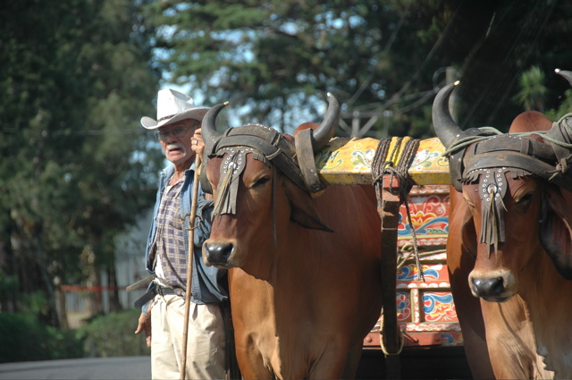

04/12/2006
Laguna De Lagarto
Der erste Stop unserer Reise war die Laguna de Lagarto Lodge im Norden des Landes in der Nähe der Grenze zu Nicaragua. Wir wurden direkt am Flughafen abgeholt und konnten in der dreistündigen Fahrt auf immer kleiner und schlechter werdenden Straßen schon einige der vielen unterschiedlichen Landschaften Costa Ricas in Augenschein nehmen. Auf das warme Valle Central, in dem auch die Hauptstadt San Jose liegt, folgte ein Stück durch die nebligen Berge rund um den Vulkan Poas. Später haben wir uns unserem eigentlichen Ziel, dem regnerischen und schwülen Flachland im Norden genähert.
Die Unterkunft selbst liegt auf einem kleinen Hügel in einer großen Lagune. Von den Terrassen aus hat man einen wunderbaren Blick in den umliegenden Urwald, in dem es ständig klingt, als würde es regnen. Nachdem wir auf dem Hinweg endlich echte Ananas in ihrem natürlichen Habitat bewundern durften, hat sich auch unsere Hoffnung, Tukane in freier Natur zu sehen, prompt erfüllt. Neben dem einen Wunsch-Tukan hockten gleich noch zehn weitere im selben Baum. Darunter wuselten Nasenbären in den Fruchtabfällen, die die gierigen Tukane fallen gelassen haben. Kolibris, Papageien, Geier und auch ein Vielfraß dürfen in der Aufzählung der Terassensichtungen nicht fehlen.

Die Hotelmannschaft hat sich allerdings redlich bemüht, uns vom Terassenhocken abzuhalten und uns mit einem vollen Ausflugsprogramm unterhalten. Eine längere Bootsfahrt auf dem benachbarten Rio San Carlos führte uns, vorbei an Krokodilen, Aras, Teak-Holz (in Baumform) und vielen exotischen Gewächsen durch die dampfende Silhouette des Urwalds bis zur Mündung in den Rio San Juan. Dieser wiederum mündet im späteren Verlauf in den Nicaragua-See.
Zur Urwaldwanderung sind wir auf Anraten der Crew in geliehenen Gummistiefeln erschienen. Damit waren wir gerade mal fast richtig gekleidet, denn später sollten wir tief im Schlamm versinken. Der Regenwald hat seinem Namen zumindest alle Ehre gemacht und alles was wir hineingetragen haben so durchnässt, dass wir einen Trockner suchen mussten.